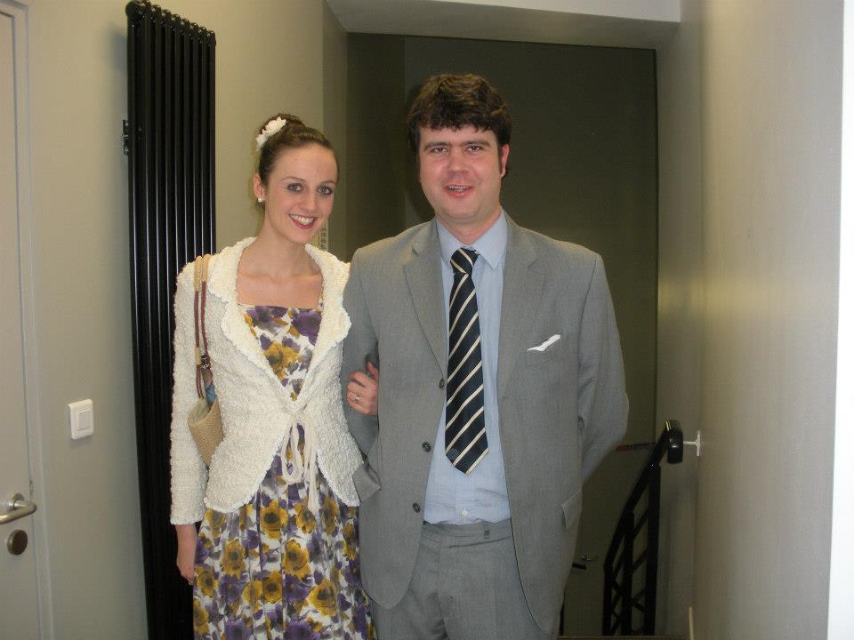
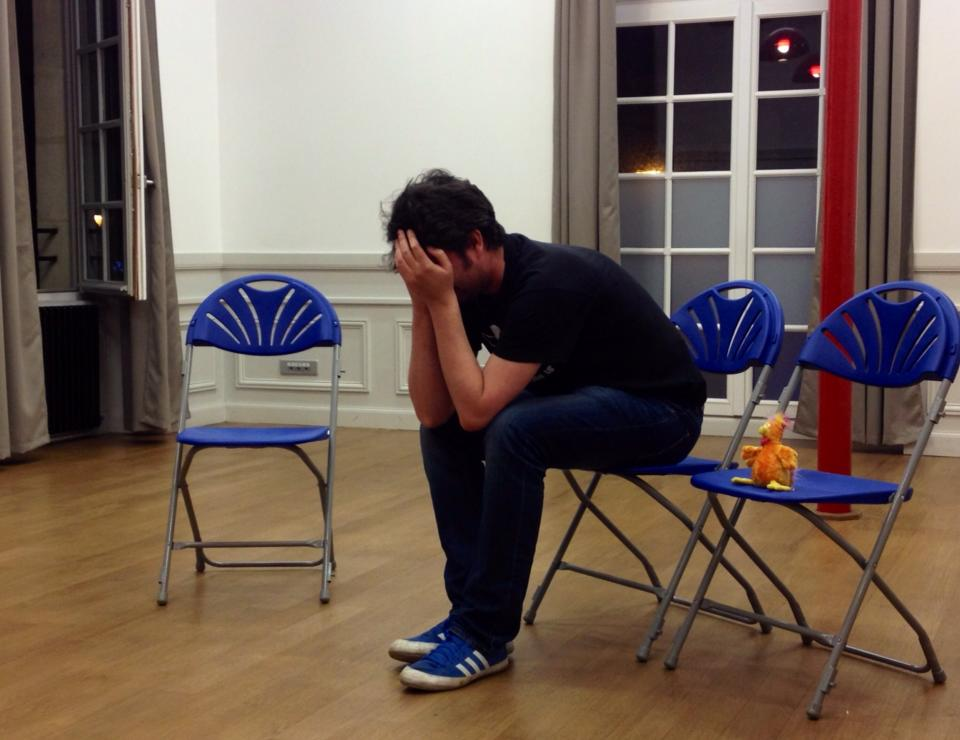
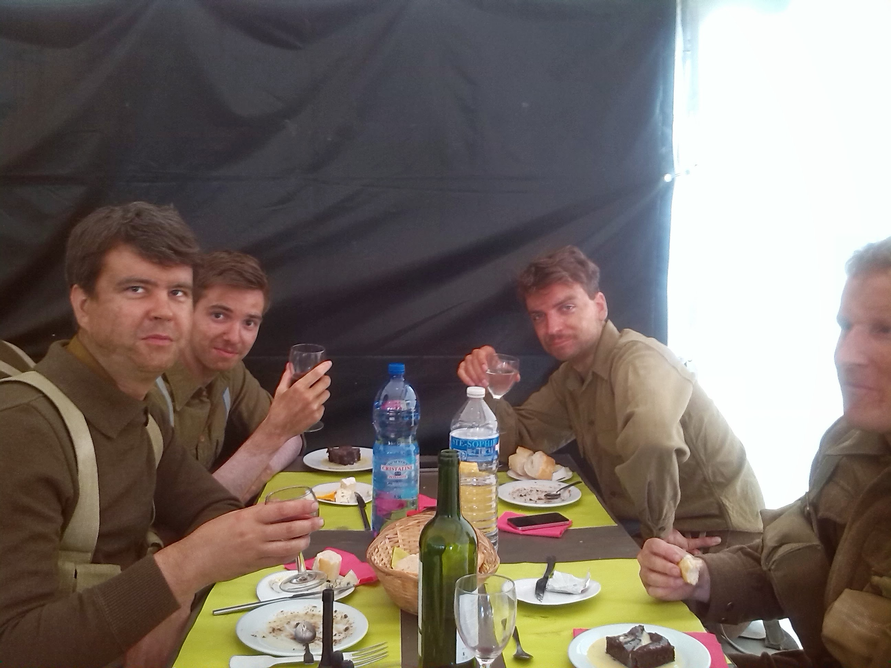
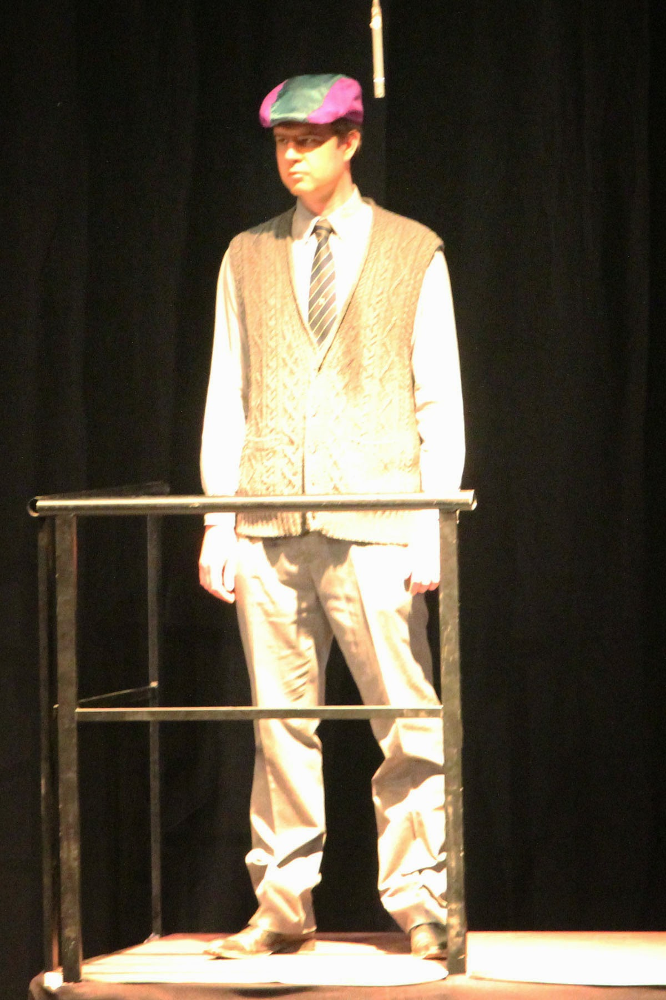
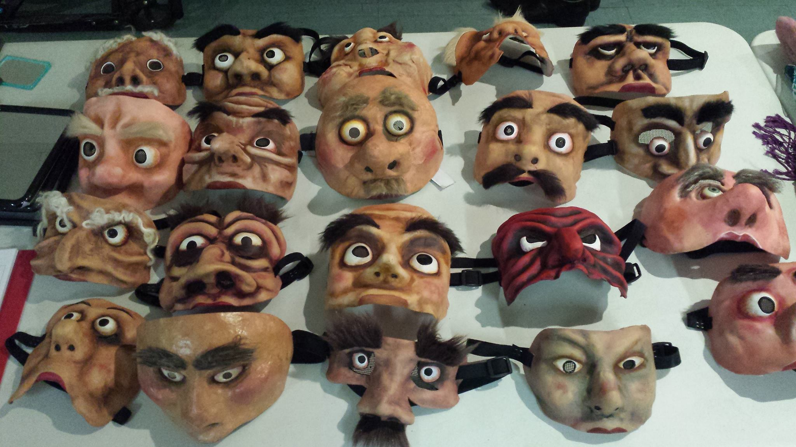
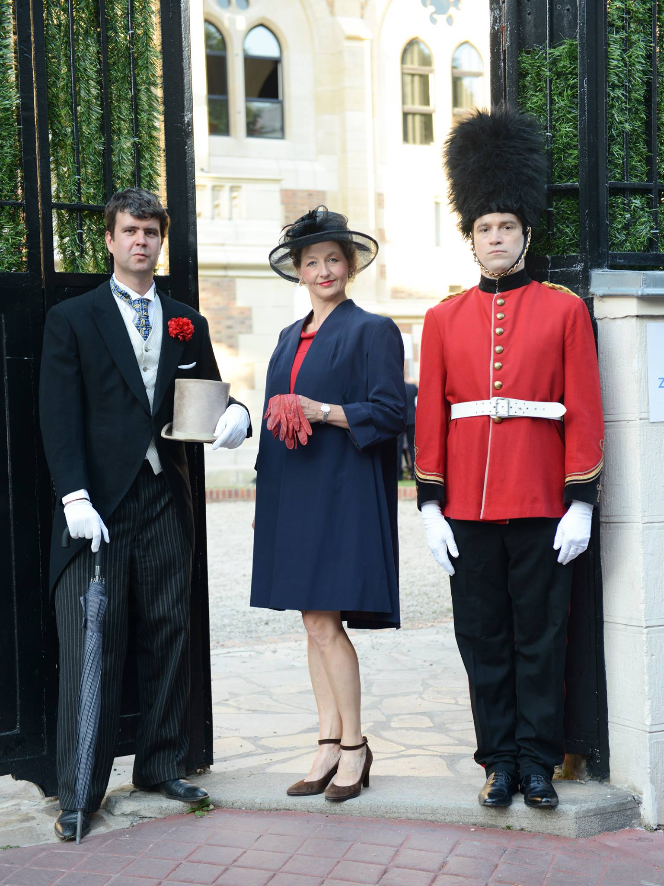
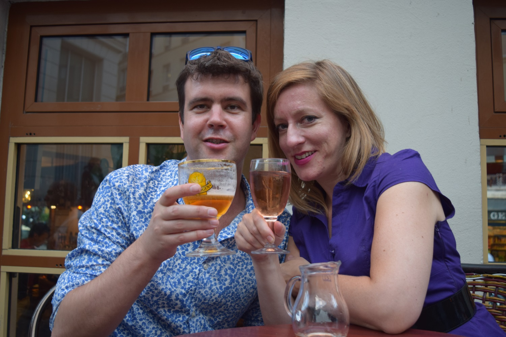
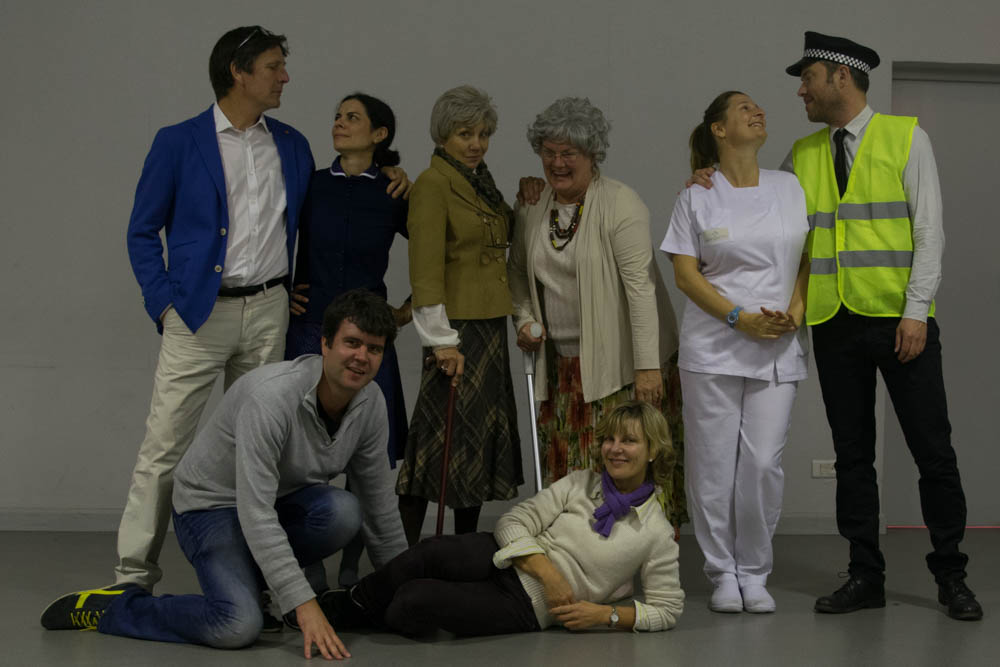

Hosted on GitHub Pages — Generated by FsBlog

"Mixed Doubles & Deckchairs" was show produced by the International Players on 22nd/23rd March 2013 in St. Germain-en-Laye. The evening was based on revue "Mixed Doubles: An Entertainment on Marriage" first put together by George Melly. Robert Played the Bridegroom in "A Man's Best Friend", by James Saunders.

"Introduction To Improvision" was a series of six workshops on improvision by Mark Jane. The course was loosely based on Keith Johnstone's "Impro: Improvisation and the Theatre"

"En mai, fais ce qu'il te plaît" (English: "Darling Buds of May") is a 2015 French historical drama film directed by Christian Carion. Robert plays a Scottish solider. His scense were shot 5th/6th 2014.
Montmartre Dionysia is an English Language theatre festival in Paris. Robert played Jerry in Thomas O'Brien's play "Saturday Afternoon". The play ran for two nights 4th and 6th December 2014 and won first prize in the festival competition.
In January/February 2015 Robert attended a series of five workshops, "Acting For Camera Workshop" by Peter Vickers.

The Roaring Twenties was a musical by Graham Bushnell, produced by the International Players. The play ran for four performances over the weekend of 10-12 April 2015.

In April 2015 Robert attended a series of two workshop based on Keith Johnstone's Trance Mask technique, the workshop was run by Mark Jane.

In June 2015 Acta Fablua organized an English Garden Party as immersive theatre event. Robert played a spy/bodyguard to the queen.

In July 2015 Robert filmed an advert for dating site. The advert was filmed and produced by Cosmic Joke.

Robert directed and produced "Blue Suede Blues" by Diana Raffle, inconjuction with Helen Emanuel for the International Players. The play was part of the Villennes-sur-Scene Theatre festival.